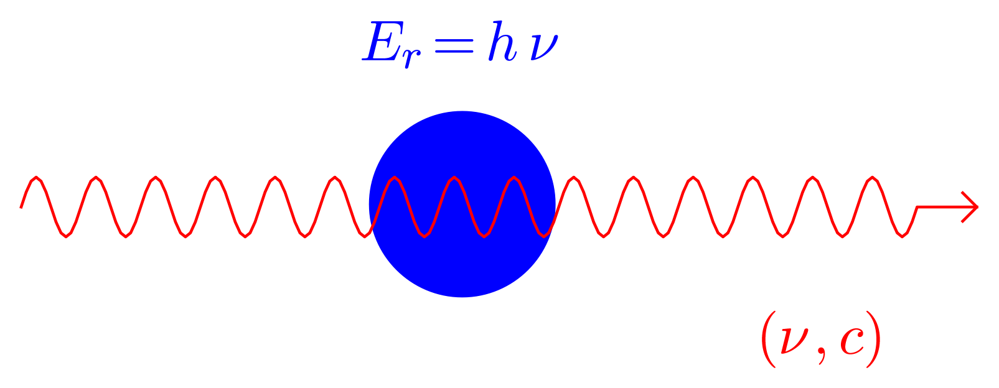
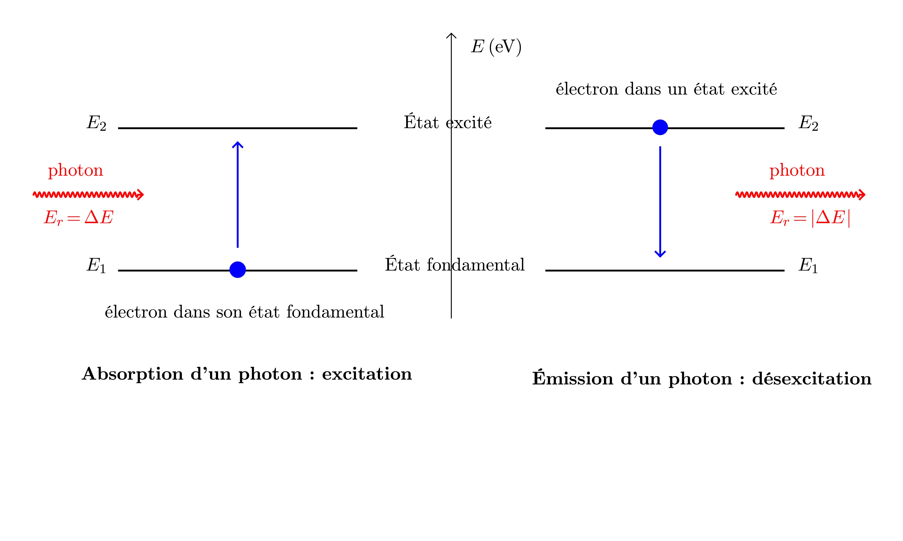
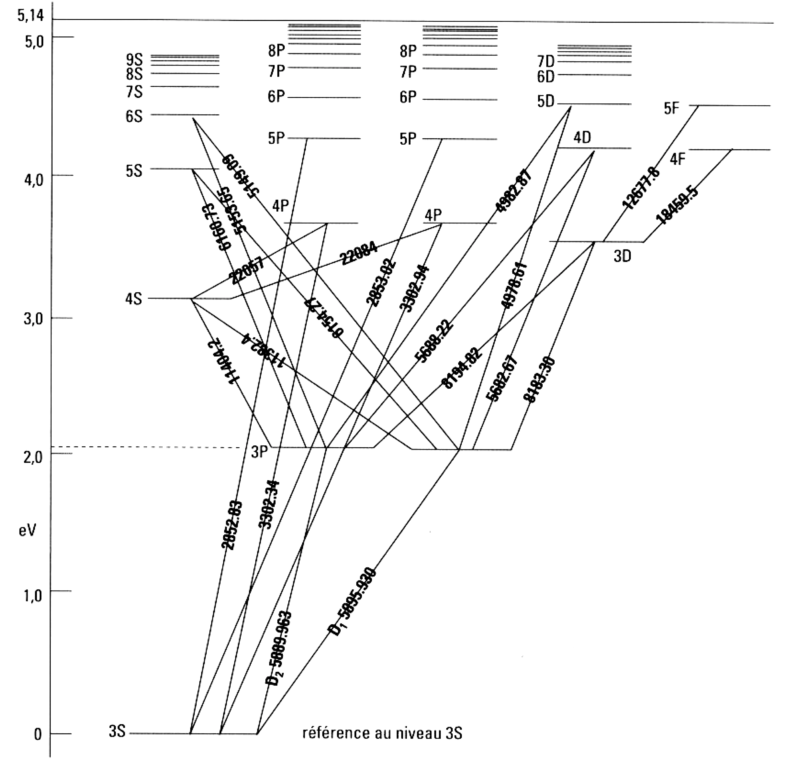
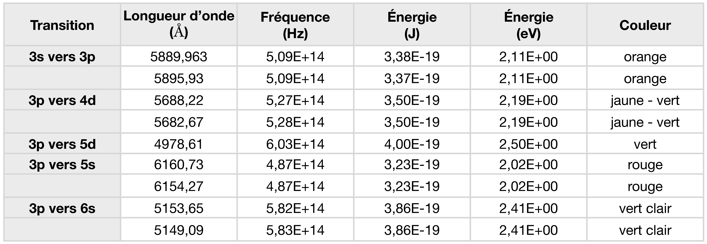

Documents
Caractéristiques d’une onde électromagnétique sinusoïdale
Une onde électromagnétique sinusoïdale est caractérisée par sa fréquence $\nu$ (en hertz) et sa longueur d’onde $\lambda$ (en mètre). La relation entre ces deux grandeurs est : $$ \lambda= \dfrac{c}{\nu} $$ où $c$ est la célérité de l’onde dans le milieu dans lequel elle se propage ($c = \pu{3,0e8 m.s-1}$ dans le vide).
Photon
En 1900, pour comprendre comment la matière et les ondes électromagnétiques échangent de l’énergie, le physicien Max Planck énonce que ces échanges ne peuvent se faire que par « paquets » d’énergie bien définis qu’il nomme quanta (pluriel de quantum, plus petite mesure indivisible).
En 1905, Albert Einstein comprend que limiter la notion de quanta aux seuls échanges d’énergie entre la matière et le rayonnement est trop réducteur : les quanta d’énergie sont portés par des particules associées au rayonnement (indépendamment à tout échange d’énergie).
En 1926, Gilbert Newton Lewis invente le mot photon pour nommer les particules qui transportent les quanta d’énergie.
Il existe donc deux modèles complémentaires pour décrire le comportement d’un rayonnement :
-
ondulatoire : un rayonnement est une onde périodique sinusoïdale de fréquence $\nu$ se propageant à la célérité $c$ dans le milieu ;
-
corpusculaire : un rayonnement est constitué par des photons, particules sans masse se propageant à la célérité $c$ dans le milieu et possédant l’énergie (en joule J) : $$E_r = h \nu$$ où $\nu$ est la fréquence de l’onde associée au photon et $h$ la constante de Planck ($h = \pu{6,63e-34 J.s}$).

En fonction des problèmes, il peut être plus pratique de considérer un rayonnement soit comme une onde, soit comme un corpuscule : dualité onde-particule.
Quantification de l’énergie des atomes
Les physiciens de la première partie du XX^ème^ siècle ont montré qu’un atome, comme tous les édifices microscopiques, ne peut se trouver que dans des états d’énergie bien déterminés. Les électrons s’organisent
donc sur des niveaux d’énergie ; le cortège électronique possède une structure bien déterminée.
L’atome est alors dans son état fondamental.
Échanges d’énergie entre un atome et son environnement
Lorsqu’un atome reçoit de l’énergie de l’environnement, les électrons (préférentiellement les électrons de valence) peuvent « sauter » vers des niveaux d’énergie supérieure. L’atome est alors dans un état excité (ou plus simplement : est excité).
L’énergie nécessaire au « saut » de l’électron d’un niveau d’énergie vers un autre doit être exactement égale à la différence d’énergie entre les niveaux d’énergie concernés. Cette énergie est communiquée à l’atome par un photon qui est alors absorbé.
Un atome finit toujours par restituer l’énergie reçue au milieu extérieur. Lorsqu’un électron « saute » vers un niveau d’énergie inférieure, un photon, possédant une énergie égale à la différence d’énergie entre ces niveaux, est émise par l’atome.

Diagramme de Gotrian du sodium
Un diagramme de Gotrian indique les niveaux d’énergie d’un atome et les transitions possibles pour les électrons dans son cortège électronique.
Dans le diagramme du sodium (ci-dessous), les longueurs d’onde sont données en angström au niveau des traits de transition ($1 Å = \pu{1e-10 m}$).
Le doublet du sodium correspond aux longueurs d’onde $\pu{589,0 nm}$ et $\pu{589,6 nm}$. Les autres raies visibles à l’œil nu ont pour longueur d’onde respectivement $\pu{498 nm}$, $\pu{515 nm}$, $\pu{569 nm}$ et $\pu{615 nm}$.

Exploitation
- Le numéro atomique du sodium est $Z = 11$. Décrire la structure du cortège électronique de l’atome de sodium, dans son état fondamental avec les notations introduites dans le cours de chimie.
Solution
$1 s^2 \; 2 s^2 \; 2 p^6 \; 3 s^1$
- En déduire à quoi correspond le nombre 3 de la couche 3S présente dans le diagramme de Gotrian.
Solution
Le nombre 3 est le nombre quantique principal $n$, il correspond à la troisième couche ($M$) de la classification périodique. C’est ici la couche de valence (couche externe).
- Quelle est la particularité de la position de la sous-couche $3d$ comparativement à la sous-couche $4s$ ?
Solution
La sous-couche $3d$ est plus haute en énergie que la sous-couche $4s$. Pour un électron excité il est donc plus « facile » d’atteindre la sous-couche $4s$ que la sous-couche $3d$.
- Comment sont dénommés les transitions d’énergie correspondants au doublet jaune du sodium dans le diagramme de Gotrian ?
Solution
$D1$ et $D2$.
- Identifier toutes les transitions correspondants aux radiations observables à l’œil nu.
Solution

- Déterminer la fréquence de chacune de ces radiations.
Solution
Cf. le tableau, réponse de à la question 5.
Pour le calcul, $\nu = \dfrac{c}{\lambda}$.
- Expliquer pourquoi un atome ne peut absorber que des radiations qu’il est capable d’émettre.
Solution
L’absorption et l’émission d’énergie correspondent aux mêmes transitions. Dans le premier cas, l’atome gagne de l’énergie (c’est le milieu environnant qui la lui fournit), dans le second, il en perd (c’est le milieu environnant qui la récupère).
- Déterminer la valeur de l’énergie des photons associés à chacune des radiations situées dans le visible. Y a-t-il accord avec les grandeurs indiquées sur les graduations ?
Remarque : L’électronvolt (eV) est une unité d’énergie (l’unité légale étant le joule J) : $$ \pu{1 eV} = \pu{1,6e-19 J}$$
Solution
Cf. tableau ci-dessus. Pour le calcul, $E_r = h\, ν = \Delta E$ (pour le cas de l’absorption).
Conversion de l’énergie : $\Delta E(eV)= \dfrac{\Delta E(J)}{\pu{1,6e-19 J⋅eV-1}}$.
- Quelles sont les radiations, présentes dans ce diagramme, qui appartiennent au domaine de l’ultraviolet ? À quel domaine appartiennent les autres raies citées ?
Solution
- UV : toutes les radiations de longueur d’onde inférieure à $\pu{4000 Å}$.
- Les radiations de longueur d’onde supérieure à $\pu{8000 Å}$ se situent dans le domaine des IR.